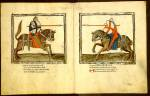

Hugo van Trimberg, Der Renner (Bekorte versie.) Duits. Handschrift op perkament, 264 ff., 330 x 265 mm. Beieren (of Oostenrijk?), 1402. -- (VGG F 4)
De Bambergse schoolmeester Hugo van Trimberg schreef aan het einde van de dertiende eeuw onder de titel ‘Der Renner’ een omvangrijk leerdicht van ruim vierentwintigduizend verzen. Het omvat praktisch alles wat een leek in die dagen behoorde te weten van ethiek en moraal, zonde en boete, voorts een handzaam overzicht van wat de wetenschappen hem aan nuttige kennis te leren hadden. De talrijke bewaarde handschriften bewijzen dat het werk in brede kring een succes was.
Het Leidse handschrift onderscheidt zich door zijn luxe. Het telt niet minder dan vierenzestig grote miniaturen. Familiewapens in de marge en een bezittersinscriptie die naar keizer Maximiliaan van Oostenrijk (1459-1519) lijkt te verwijzen, maken het aannemelijk dat het voor een aanzienlijk heer geschreven is, al is diens identiteit niet vastgesteld. Naar de taal te oordelen komt het uit Beieren. De schrijver is een zekere Michael Althaymer uit Augsburg, van wiens hand een tweede handschrift van ‘Der Renner’, ditmaal in een andere versie, bekend is, dat in Stockholm wordt bewaard. De decoratie zou naar niet gepubliceerd onderzoek van Han Timmer een Oostenrijkse herkomst aannemelijk maken.
De voorliggende opening (folia 135v-136r) laat twee tegenover elkaar geplaatste, bijna pagina-grote miniaturen zien, elk voorzien van een zilveren lijst, zoals alle andere miniaturen in het handschrift. Uit de symmetrie van de voorstelling en de dreigende houding van paarden en ruiters ten opzichte van elkaar blijkt dat ze als één geheel moeten worden opgevat. De woorden van Meester Hugo bevestigen dat: hij hekelt er de ridders die om zichzelf te bewijzen zich tot een tweekamp laten verleiden. De miniaturist lijkt desondanks geheel in de ban van de spanning van een dergelijk gevecht.
Een bijkomende bijzonderheid van de miniatuur is dat sporen van de ondertekening (zie nummer 25) nog duidelijk zichtbaar zijn. De miniaturist is ervan afgeweken bij de staart van het paard ter linkerzijde en bij de punten van de lansen.
Literatuur
- A.W. Byvanck, Les principaux manuscrits à peintures conservés dans les collections publiques du Royaume des Pays-Bas, Paris 1931 ( = Bulletin de la Société francaise de reproduction des manuscrits à peintures. 15), p 97-100, pl. XXXII.
- G.I. Lieftinck, Manuscrits datés conservés dans les Pays-Bas. T. 1. Amsterdam 1964, nr. 239.
- B. Müller, ‘Südtiroler illustrierte Renner-Handschriften’, in: Bericht des historischen Vereins Bamberg, 109 (1973), p. 183-236.
| vorige pagina | top pagina |